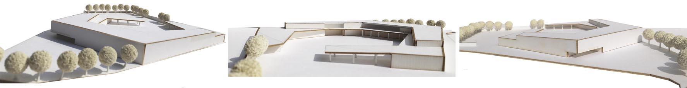
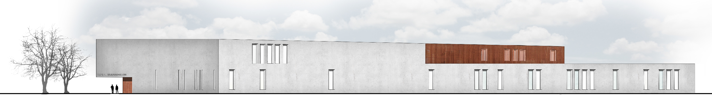
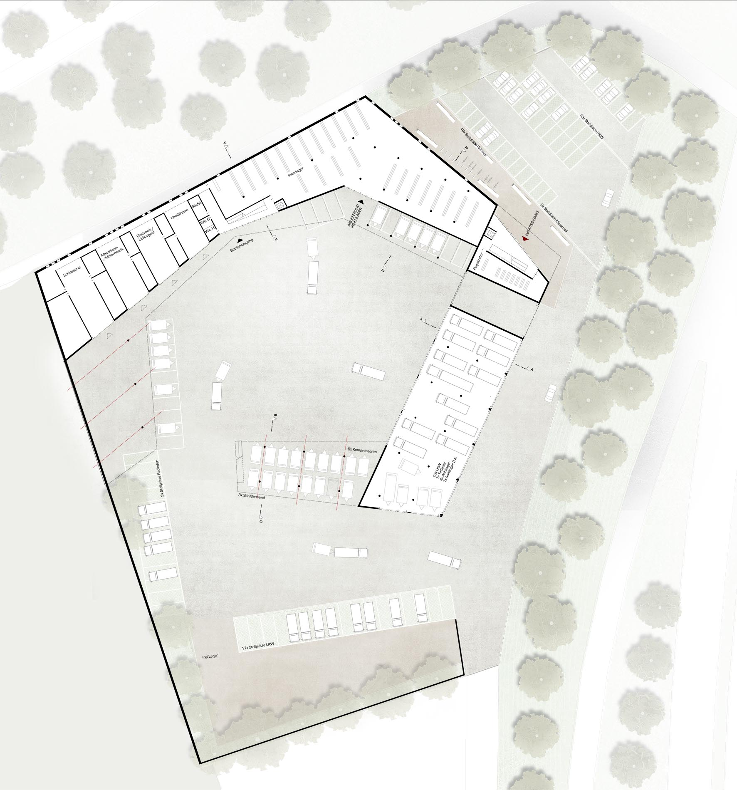
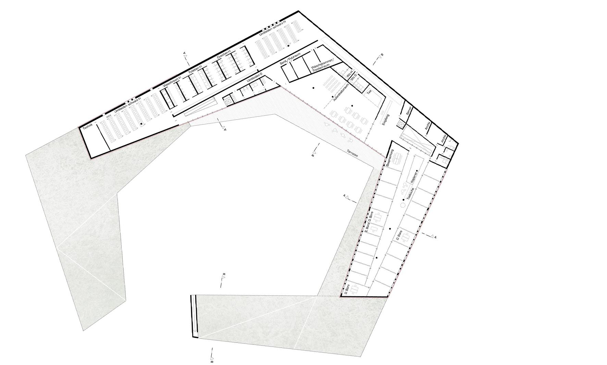
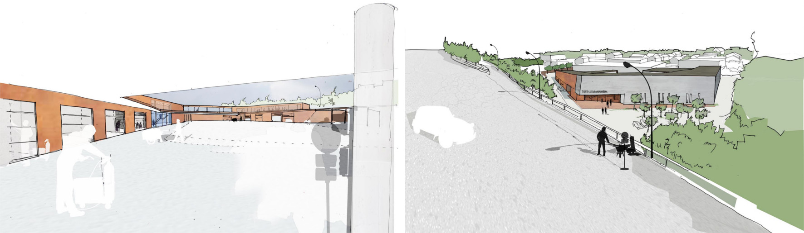
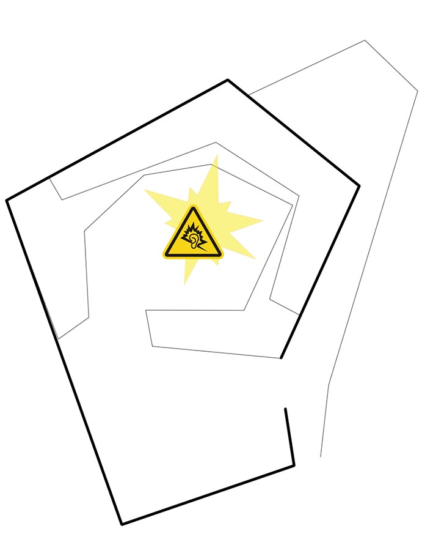
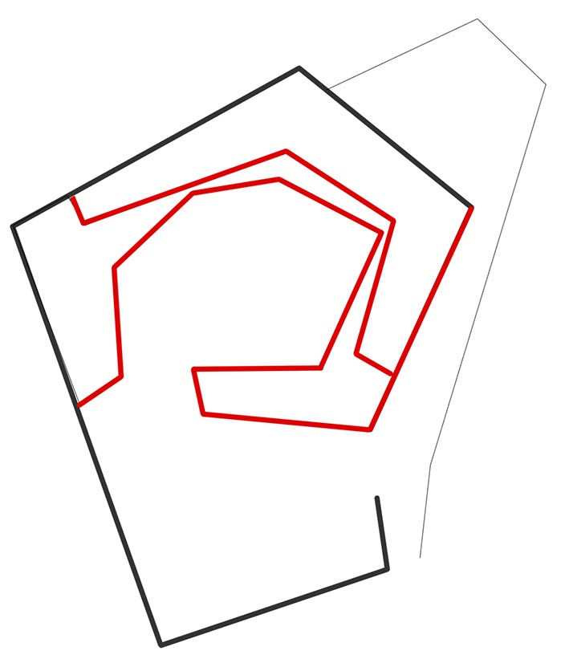

-

maqueta de desarrollo de proyecto

plano de situación

fachada principal

alzado sudeste

alzado noroeste

planta acceso

primera planta

detalle fachada

perspectiva interior y exterior
El acceso principal al edificio se encuentra al final de un sinuoso camino que discurre paralelo a la arboleda generada
siguiendo el desnivel con la autopista (13 metros), dándole la espalda a la trasera del polígono industrial que delimita
el solar así como a toda la circulación de camiones y maquinaria, haciendo visible esta fachada desde la autopista ,
sirviendo ésta de carta de presentación de la sede, alejada del ruido y la suciedad que sucede de puertas para dentro.
A diferencia de la lógica formal que estructura la arquitectura de Mannheim, los límites del solar constituyen aquí
un requisito complementario al objeto estrictamente formal.
Las condiciones programáticas, de alto carácter funcional, requieren encontrar una solución idónea para la circulación
de coches, camiones y maquinaria, así como de carga, descarga y almacenamiento. Se adopta pues una estructura en espiral
con las siguientes características funcionales:
Los camiones tienen acceso bidireccional a través la nave de aparcamiento, pudiendo acceder directamente al patio donde
se encuentran la maquinaria a recoger, y realizando un movimiento circular que evita que se tenga que maniobrar hacia
atrás (cosa que es complicada cuando se trata de camiones de gran longitud).
Los espacios de almacenaje se encuentran dentro de esta circulación, favoreciendo la carga y descarga de material y
maquinaria.

Clara separación entre los llamados espacios „blancos y negros“, esto es la zonas de trabajo y las zonas de acceso de
peatones al centro (ver esquema).
Los llamados „espacios blancos“ (Administración, cantina o vestuario) se encuentran en la primera planta, mientras que
los „espacios negros“ como los almacenes o talleres, se encuentran en la planta de acceso en contacto directo con el
patio y el movimiento espiral circulatorio antes citado.
Existe una separación blanco/negra también en relación a los vehículos. Los coches „privados“ de trabajadores y visitas acceden directamente al parking de la entrada principal (blanco), mientras que los camiones y demás maquinaria, circulan a través del patio y en la zona sur del solar, funcionando el edificio como barrera separatoria entre ambos mundos.
El edificio funciona también como barrera de sonido, encerrando las ruidosas actividades en su patio, y aislando acústicamente al barrio residencial que se encuentra al norte del solar.
En cuanto a la materialidad, se toman prestados para las fachadas dos materiales básicos en la ingeniería civil a modo
de homenaje: hormigón y acero.
La fachada norte, barrera de sonido hacia la carretera, está compuesta de hormigón con pequenas aperturas, dotando a
esta fachada de un caracter masivo y cerrado, que refuerza la idea de un organismo que se cierra hacia fuera para abrirse
al patio donde tiene lugar toda la actividad del centro. La fachada principal está compuesta también de hormigón a excepción
del acceso, una hendidura en la masividad del hormigón constituida esta vez de acero, que absorbe la transición entre
ambos materiales; pues a partir de ese punto el edificio se convierte al acero cortén.